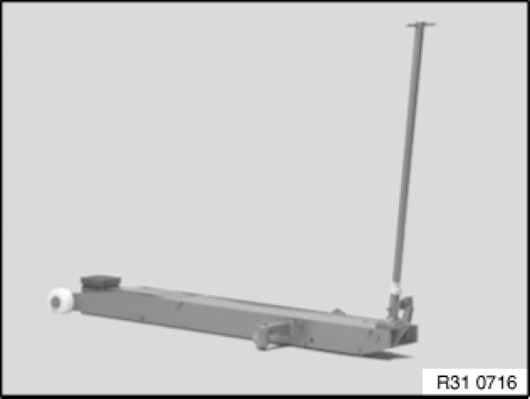
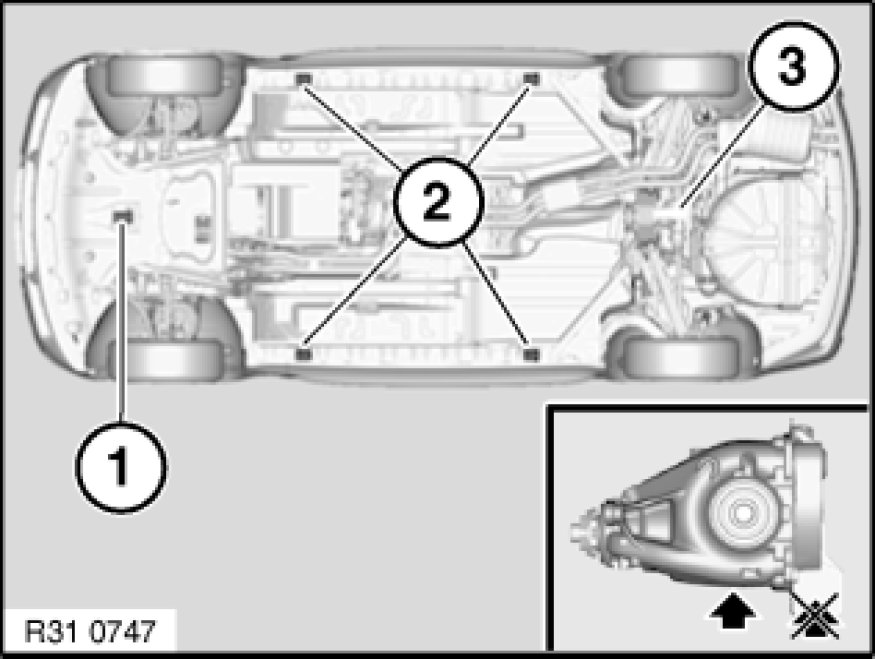

Differential Assembly: Service Precautions
00 ... ... - Raising vehicle with trolley jack

Important!
Observe the following trolley-jack-related instructions:
1. Use only BMW-distributed/approved trolley jacks which have rubber plate contact points.
2. Trolley jacks must be regularly serviced and always checked for functional reliability before they are used!
3. Check the rubber plate on the trolley jack prior to each use, replacing if necessary.

Warning!
The vehicle may be raised with a trolley jack only at the following jacking points!
1 - Car jacking point
2 - Side car jacking points
3 - Rear differential
Risk of damage: It is not permitted to raise the vehicle at the rear differential cover!